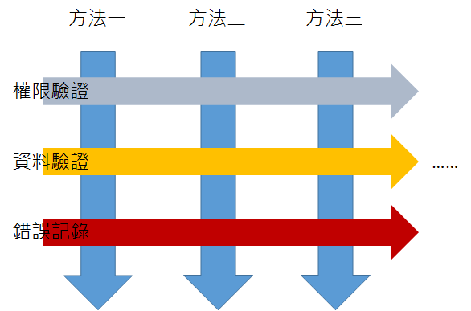
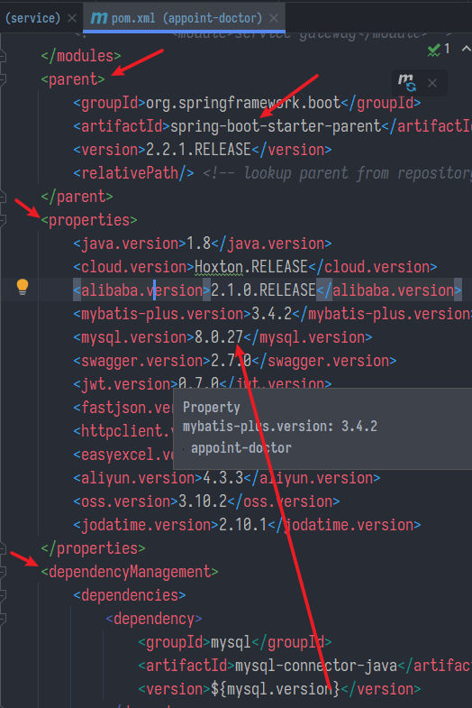
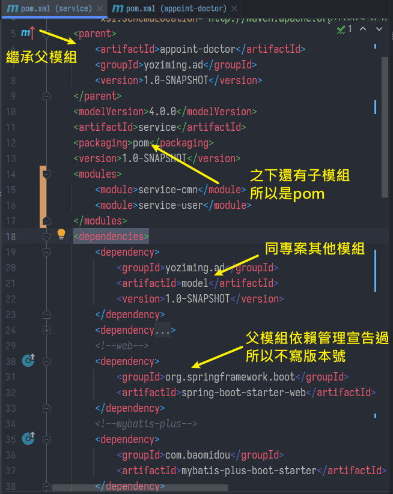
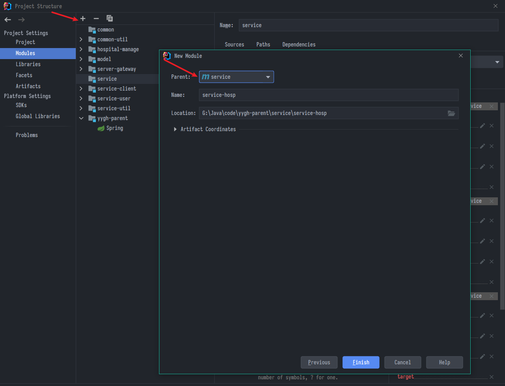
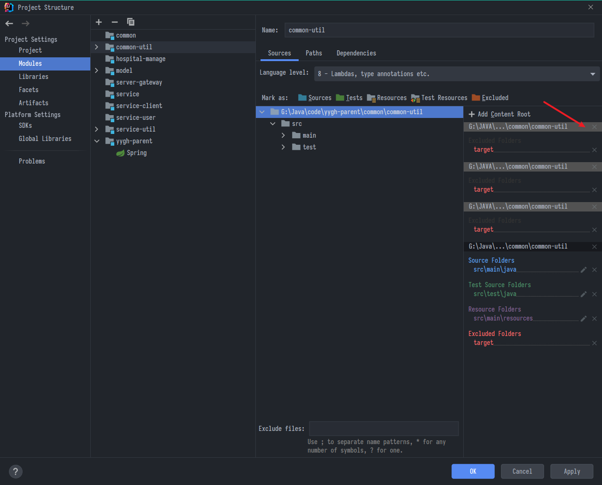
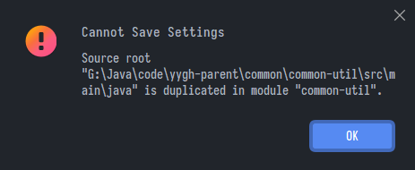
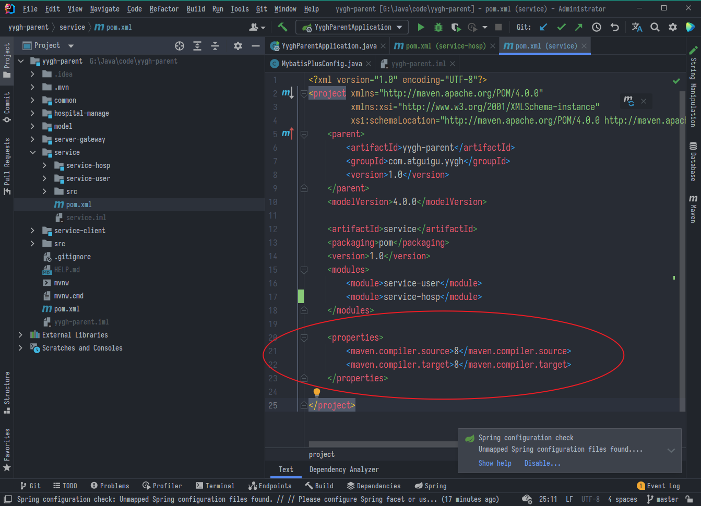
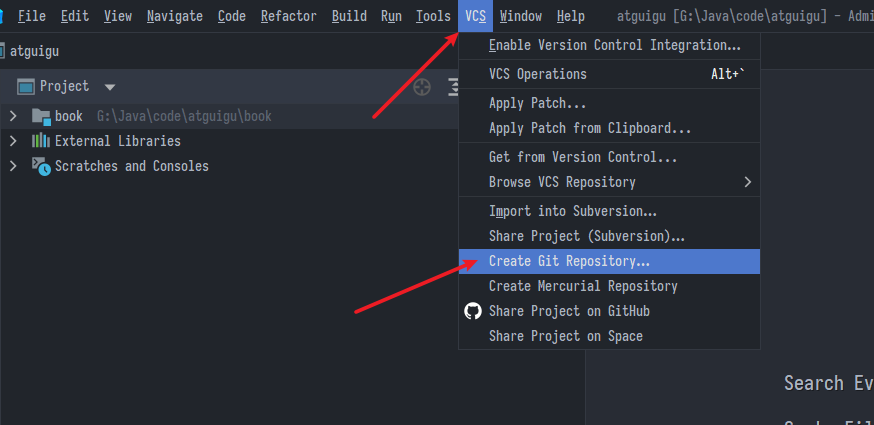
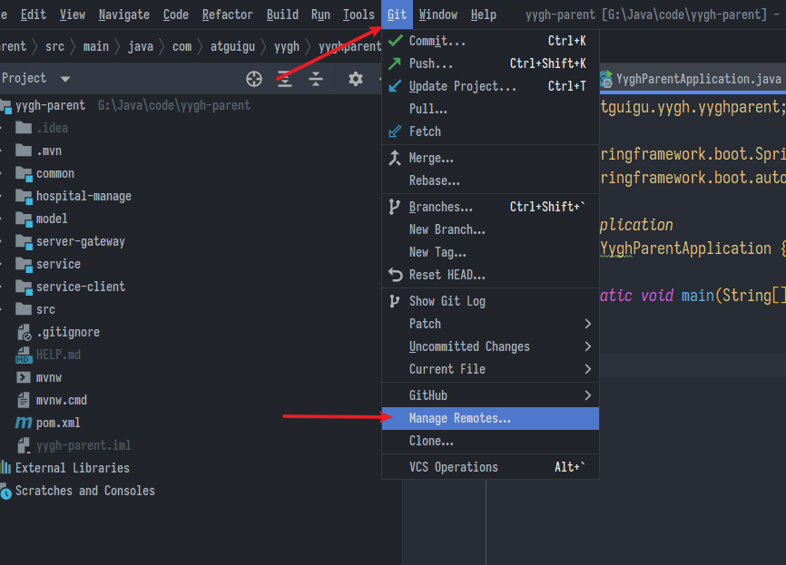

本筆記基於:尚医通项目:尚硅谷Java微服务+分布式+全栈项目【尚医通】 https://www.bilibili.com/video/BV1V5411K7rT
Spring
- 輕量(檔案才幾MB)的開源框架，用以簡化開發過程
- 最主要目的就是降低耦合
- 非侵入式:框架的API不會出現在業務邏輯中，業務邏輯本身是乾淨的方便轉移
- 容器:用容器管理物件的生命週期與依賴關係
- Spring的核心為IoC與Aop
IoC
- Inversion of Control，直譯控制反轉不好理解，其實就是一種依賴關係的轉移
- 傳統方法例如"貓叫"，我要先造一隻貓，然後讓貓執行叫方法
- 現在反過來，我從"叫"出發，告訴容器要執行叫的是一隻貓，這個貓由容器來提供
- 如果想換成"狗叫"，我一樣是從叫出發，只是跟容器說現在要給我狗
- 如此一來，降低了耦合(不需要親自造貓用貓)，提高了復用性(一個叫不僅貓狗，雞豬牛羊都行)
- 傳統依賴關係是需要先主動造貓或造狗之後用來叫，現在反過來從"叫"讓容器造對應的物件去想叫的地方，所以說是控制反轉
DI
IoC算是一個思想，實作上Spring使用DI將其實現
-
Dependency Injection，依賴注入，是IOC思想的具體實現，即由容器建立物件，並且把物件注入到要用的地方
-
被依賴物件透過外部注入至依賴物件的地方使用
-
就是把物件實例化交給框架管理
-
本來
Book book = new Book() -
現在用工廠代理+反射交給框架創建，降低耦合
-
Bean管理
-
Spring的Bean管理，流程分為創建物件與注入屬性
-
想造物件首先要有一個工廠，Spring提供有兩種:
-
BeanFactory:框架內部用的接口，在獲取物件時才創物件 -
ApplicationContext:是BeanFactory的子接口，在加載時就創好物件，一般用的都是這個
-
AOP
- Aspect-Oriented Programming
- 切面導向程式設計，它的目的在於將許多的共同方法抽離出來，與物件導向程式設計類似，但AOP 與OOP 不同的地方就在於，AOP 不用原方法呼叫共同方法，只需要指定執行共同方法的時機點即可。
- 不好理解，看專業的說明吧

練習項目簡介
查了一下中國看病還挺不方便的，難掛號、難排隊、看診前還要先付錢，沒繳錢不看
- 尚醫通即為網上預約掛號系統，網上預約掛號是近年來開展的一項便民就醫服務，旨在緩解看病難、掛號難的就醫難題，許多患者為看一次病要跑很多次醫院，最終還不一定能保證看得上醫生。網上預約掛號全面提供的預約掛號業務從根本上解決了這一就醫難題。隨時隨地輕鬆掛號！不用排長隊！
- 本項目技術棧如下:
後端技術
-
SpringBoot：簡化新Spring應用的初始搭建以及開發過程
-
SpringCloud：基於Spring Boot實現的雲原生應用開發工具，SpringCloud使用的技術：（SpringCloudGateway、Spring Cloud Alibaba Nacos、Spring Cloud Alibaba Sentinel、SpringCloud Task和SpringCloudFeign等）
-
MyBatis-Plus：持久層框架
-
Redis：記憶體緩存
-
RabbitMQ：消息仲介軟體
-
HTTPClient: Http協議用戶端
-
Swagger2：Api介面文檔工具
-
Nginx：負載均衡
-
Lombok
-
Mysql：關係型資料庫
-
MongoDB：面向文檔的NoSQL資料庫
前端技術
- Vue.js：web 介面的漸進式框架
- Node.js： JavaScript 運行環境
- Axios：Axios 是一個基於 promise 的 HTTP 庫
- NPM：包管理器
- Babel：轉碼器
- Webpack：打包工具
其他
- Docker：容器技術
- Git：代碼管理工具
架構圖


開始搭建項目
使用Maven管理來搭建多模組專案，需要先了解pom.xml內標籤的意義
-
project:包含pom一些約束的資訊，通常固定 -
modelVersion:當前pom的版本，通常固定 -
groupId:公司網址.項目名，可以看做項目的包名，通常整個專案統一 -
artifactId:當前專案名或模組名、子模組名，以-連接 -
version:版本號，SNAPSHOT表示快照，每次建構Maven都會去遠端倉庫檢查最新的快照 -
name:模組描述名(類似別名性質) -
description:模組描述 -
dependencies:依賴列表，若有子模組會全部繼承dependency:依賴項目scope:包依賴的範圍- 預設是compile，表示編譯、測試、運行階段都需要此依賴的jar包在classpath中
- provided則表示容器會提供 test
optional:設置依賴是否可選exclusions:排除依賴傳遞列表
-
dependencyManagement:依賴管理，只宣告不實際引用，如果不在子模組宣告就不會被繼承- 當子模組宣告某項依賴且不指定版本，才會從父項繼承該該依賴
- 若子模組指定了版本號，則認為沒關係了
-
build:為構建行為提供支援plugins:外掛程式列表
-
parent:繼承的父模組 -
modules:包含的子模組 -
packaging:打包類型- 預設為jar
- 如果是父模組必須為pom
-
properties:可以看做自訂的變量
配置Module
先設定全專案的父模組
- 新建Maven(無archetype)，父模組層只做為管理引用，刪掉src資料夾只保留
pom.xml parent是spring-boot-starter-parentpackaging打包級為pomproperties中放置模組管理的版本號dependencyManagement宣告全專案用到的依賴- 其中版本號動態綁定於
${propertie}
- 其中版本號動態綁定於

modules下宣告管理的子模組列表，這個IDE會自動加入
子模組
以service為例

- 當同專案下要跨模組引用(例如:共用的bean與util)，就把它看成一個依賴像第三方那樣引入就可以了
相關問題
- 按右鍵沒新增模組可選，直接按F4從專案內新增

- Content Root問題，不知道為啥IDEA有時候就是會一直重複Root，有時候會跳出錯誤，就手動刪掉多的

- 跳出這種警告

-
上網查了查，把android相關的插件都關掉，setting中
build > maven調了幾個選項，選用IDEA內建的maven- 新建好模組把這個maven.compiler屬性刪掉
-

- 最終也沒弄清到底是誰造成的原因，總之後來再也沒遇到這個問題
-
標籤重複，在pom.xml第二行
<project>處報紅，檢查一遍然後刷新maven，有時候載入怪怪的 -
版本號問題，新建時最好讓他全部是預設的1.0.snapshot
設定Git版控
- 首先把本地資料夾初始化(git init)，IDEA也有UI

- 提交到github，很簡單就不多說

上次修改於 2022-01-12